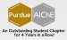

Education
Purdue University - West Lafayette, IN
B.S. in Chemical Engineering with an Honors Designation
Scholarly Project - "Synthetic Routes to Prepare MEL Zeolite Catalysts with
Different Active Site Content and Arrangement"
Graduated May 2020
Relevant Coursework Beyond the Requirements of the BSChE
"Design, Control, and Optimization of Production Manufacturing Systems" (IE 579, Fall 2019)
"Manufacturing Process Engineering" (IE 570, Fall 2019)
"Economic Decision Making in Engineering" (IE 546, Spring 2020)
Engineering Work Experience
| Process Engineer at Chevron Phillips Chemical Company | Baytown, TX | June 2020 - | |
| Process Engineering Intern at Chevron Phillips Chemical Company | Sweeny, TX | May - Aug 2019 | |
| At CPChem, I researched, developed, and designed an installation plan to install a compressor water injection, modeled water adsorption profiles to improve desiccant bed performance, and modeled cooling tower performance to draw conclusions about the relative effectiveness of differentequipment installations. | |
| Process Engineering Co-op at LyondellBasell | La Porte, TX | Aug - Dec 2019 | |
| At LYB, I developed and initiated 8 safety, optimization, and efficiency-related projects and collaborated with vendors and unit engineers to design a new loading mechanism and increase the efficiency of polyethylene product loading and transportation. I also worked on a safety driven capital project worth >$150k. | |
| R&D Chemical Engineering Intern at Honeywell UOP | McCook, IL | May - Aug 2019 | |
| At UOP, I learned and operated 6 different catalyst manufacturing unit operations and contributed to the development of 5 new, viable catalyst recipes |
Leadership Experience
|  | American Institute of Chemical Engineers - Purdue Student Chapter | Aug 2016 - May 2020 |
| In college, I was extremely involved with Purdue's AIChE student chapter from the moment I set foot on campus, and this pushed me to learn things I never would have otherwise. I have served as Undergraduate Research Committee Member, Freshman Representative, Treasurer, Conference Technical Coordinator, and External Vice President, expanding each position's role as I fulfilled it. I spearheaded a donation campaign to raise >$20k as External VP (Purdue AIChE record), gave a talk at the Annual Student conference in 2019, managed >$30k in funds as treasurer, completely upgraded our bookkeeping, planned our chapter's trip to the 2017 Annual Student Conference, and implented incentives to boost attendance by ~30%. Check out my work below! |
Designed our 2018 AIChE regional student conference logo from scratch and learned HTML and Android/iOS app development to design applications for use during the regional student conference
Honors, Awards, and Skills
Top Senior Design Project (Spring 2020, Purdue Chemical Engineering)
AIChE Donald F. Othmer Academic Excellence Award (Fall 2018, American Institute of Chemical Engineers)
Purdue Industrial Roundtable Scholarship Awardee (Fall 2019, Purdue University)
Earl and Jean Schrader Scholarship Awardee (Fall 2018 Purdue Chemical Engineering)
James H. Rust Scholarship Awardee (Fall 2017, Purdue Chemical Engineering)
National Merit Scholarship Finalist and Awardee (Fall 2016, National Merit Scholarship Association)
3 Certifications in Hazard Recognition and Mitigation and Safe Design totaling 10 hours of professional development from AIChE: Safety and ChE Education
- © Rohan Dighe 2020
- Design: HTML5 UP and Rohan Dighe